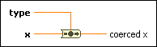

Coerce To Type Function
Owning Palette: Conversion VIs and Functions
Requires: Base Development System
Converts the input data to a compatible data type while preserving the data value. Unlike the Type Cast function, this function does not reinterpret the input data.
Use this function in the following cases:
- To eliminate a coercion dot
- To convert data without a type definition to a compatible type definition or vice versa
- To rename data on the wire, such as a user event refnum

 Add to the block diagram Add to the block diagram |
 Find on the palette Find on the palette |